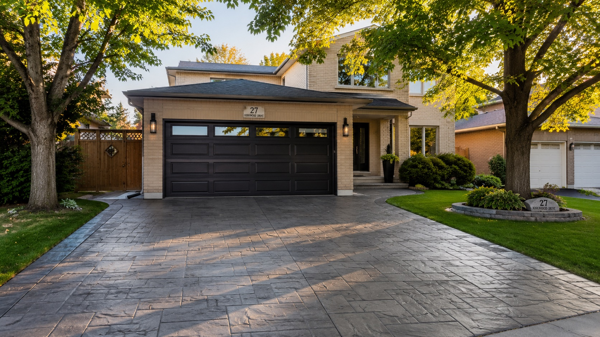
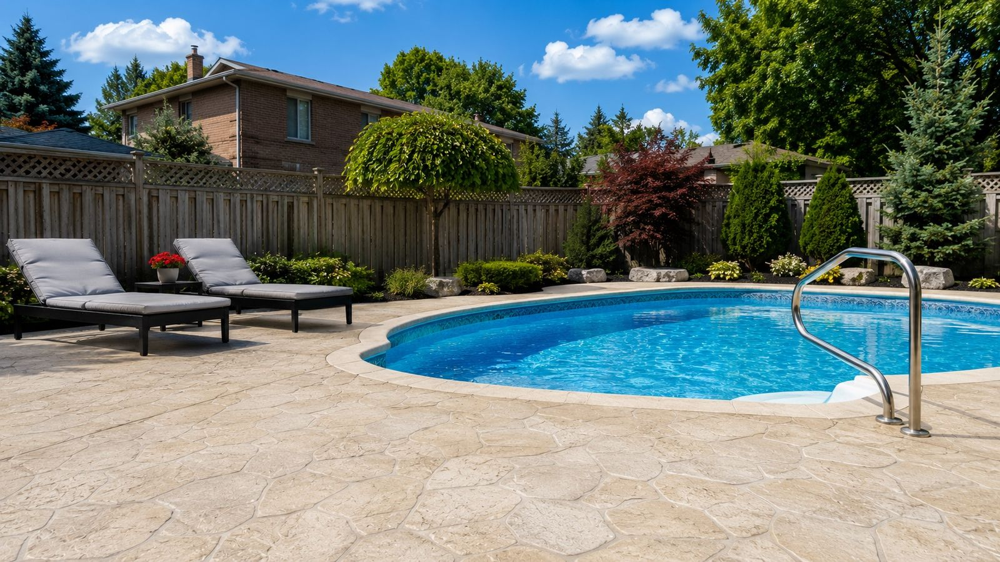

The Concrete Part of the Plumbing Job — Handled
When a plumber needs to reach a pipe under your floor, someone has to cut the concrete, dig it out, and then put it all back afterward. Most plumbers don't do that part — so you're left with a broken, open floor and no one to close it. That's the gap we fill. We handle the concrete side from start to finish, so your floor ends up whole, flat, and solid again.

Concrete Cutting & Removal
We saw-cut and break out the exact section of slab your plumber needs to reach — basement floors, garage floors, walkways, and more. Clean cuts, controlled breakout, and full removal of the old concrete, leaving a safe opening ready for the plumbing work.
- ✓ Precise saw-cutting & controlled breakout
- ✓ Full removal & disposal of old concrete
- ✓ Clean, safe opening for your plumber

Excavation & Digging for Access
Once the concrete is out, we dig out the trench to the depth your plumber needs to expose and work on the pipes. We keep the opening clean and the spoil managed, so the plumbing crew can get in, do their job, and get out.
- ✓ Trench excavation to the required depth
- ✓ Clean, managed dig — no mess left behind
- ✓ Coordinated with your plumber's timeline

Backfilling — Done Properly
This is the step that decides whether your floor stays flat or sinks and cracks a year later. After the plumbing is done and inspected, we backfill the trench with the correct compacted gravel base — properly layered and compacted so the ground underneath is stable and ready to hold new concrete.
- ✓ Correct gravel base, layered & compacted
- ✓ Stable sub-base so the pour won't settle
- ✓ The step most crews rush — we don't

Re-Pouring the Slab — Flat & Level
Finally, we pour the concrete back — matched to the height and finish of your existing floor so the patch sits flush and functions like the rest of the slab. Basement floors, garage floors, walkways, and small pads. We also handle other small concrete pours, like AC, shed, and generator pads.
- ✓ Poured flush & level with the existing floor
- ✓ Basement floors, garage floors & walkways
- ✓ Small pads too — AC, shed & generator